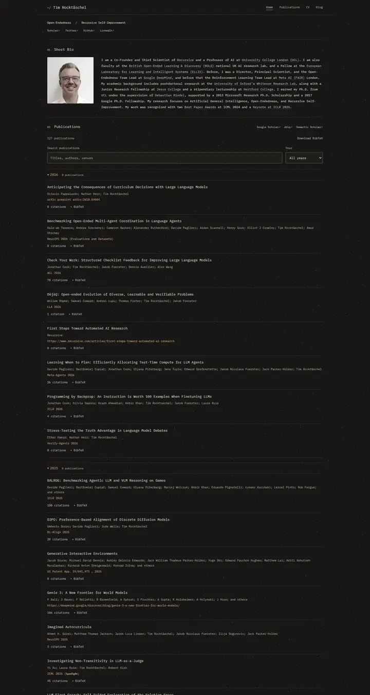

Tim Rocktäschel
A late-night shell session: warm charcoal, one monospace at 13px, steel-blue links, copper numerals and a slow drift of particles behind everything.

Checked against the rendered page. First computed_style run was contaminated by a concurrent run on the same port and was redone.
Why it is here
Dark monospace terminal aesthetic used consistently. Searchable publications, year grouping and accent colours give it a distinct identity.
Overview
Color Palette
Typography
IBM Plex Mono 400
Tim Rocktäschel, open-endedness, reinforcement learning
Abstract · Method · Results · BibTeX — 0123456789
Spacing & Shape
Page Modules
Guidelines
More like this

Amir Bar
A clean faculty prospectus in Imperial blue: Inter on white, pill links, and paper cards that lift a few pixels when you reach for them.

Christoph Feichtenhofer
A conference-hall banner in Facebook blue, then a long ledger of papers in red ink, green venues and justified grey abstracts.

David Novotny
A harbour at dusk beside a quiet reading room: a fixed teal-to-midnight panel with right-aligned contact lines, and soft grey text with tangerine links on white.

Jaeyeon Kim
A quiet seminar handout in light Roboto, where one red-highlighted question and a row of mint tags are the only raised voices.

Jonathan Shafer
A keynote opening slide: one full-bleed slate-blue field, a ringed portrait, a 108px name and a centred paragraph you read from across the room.

Junyang Lin
A quiet researcher's folio on warm paper: Garamond headings, teal small labels and hairline-ruled entries.